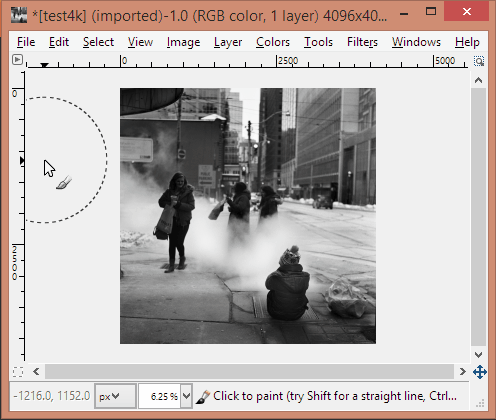

Building a Fast, Modern Image Editor
03-Jul-2015
Over the past month, I’ve been working on a fun project in my spare time—Papaya, an open source GPU-powered image editor built using C++ and OpenGL.
While this difference in performance is glaringly apparent on large images, it is also easily felt on images as small as 512 x 512 pixels. So why is Papaya faster? In short, it is fast because it uses the GPU instead of making the CPU do the heavy lifting.
Contents
1. Zooming and panning
I haven’t looked at GIMP’s code, but from its overall performance, I’m convinced that it uses the CPU for almost everything. This includes calculating the pixels to show on screen when you zoom or pan an image. The application has to use filters when zooming - nearest neighbor while magnification and linear while minification. This takes time on the CPU.
In Papaya, I’m using the Windows API to create a borderless window and I’m rendering to it with OpenGL. I’m using the awesome ImGui library by Omar Cornut for the UI. All the interface elements (including the min, max, close buttons) are actually textured quads. The main canvas is also a textured quad. Because of this, zooming in/out using the appropriate filtering method is basically free as far as the CPU is concerned. The result: extremely smooth zooming in/out.
2. Brush rendering
Papaya is faster than GIMP (and faster than all other image editors I tested) at this. To understand why, let’s have a look at how the brush tool works.
In its simplest form, the brush tool requires a circle filling algorithm. Given a mouse click position and a brush of diameter n, the program has to perform a distance test on a square of size n x n around the mouse. If the distance from the given pixel is less than or equal to the radius, the pixel has to be filled. This algorithm becomes exponentially slower as n increases linearly.

Things get even worse when you consider that the user drags the brush around. So instead of just filling in a circle, you have to fill in all the circles along a line between the user’s last drag position and the user’s current drag position. Some image editors reduce the computation involved by only filling in circles periodically along the line. This leads to nasty dimples, though.
GIMP doesn’t try to alleviate the problem in any way, and hence is atrociously slow. In Papaya, I’m using a GLSL shader to draw the brush stroke. The fragment shader samples the primary texture and renders the output to an auxiliary texture through a custom frame buffer, and then swaps the auxiliary texture handle and the primary texture handle. You can check out the WebGL-based version of the fragment shader on Shadertoy. This implementation means that the execution time does not depend on the brush size at all. Based on my tests, it runs extremely fast compared to a CPU implementation. Here’s a performance comparison of the GLSL version against my naive CPU implementation.
__rdtsc() and milliseconds were recorded using QueryPerformanceCounter on the optimized release build.
3. The road ahead
Now that the proof of concept is done, I will be cleaning up the code and adding features like anti-aliasing and opacity to the brush tool. This is a spare-time hobby project and development will take time, but I hope to experiment with more GPU-centric workflows and learn a lot along the way.
4. Closing notes
- Papaya will continue to be available for free under the MIT license on GitHub.
- Casey Muratori and his excellent educational project Handmade Hero is the primary source of information and inspiration for Papaya.
- The photo featured in the images above is creative commons licensed by its original creator, Bipin.